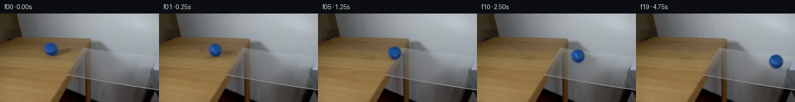

![首帧]()

Round 00
2026-11-04T21:52:41.129089+00:00像素候选变化代码 +253/−0inspection 更新
pixels fb373632ff03476f · code cc20b1b66684ca83
查看本轮 generate.py 真实 diff
--- previous/generate.py
+++ current/generate.py
@@ -0,0 +1,253 @@
+"""Deterministic local pixel continuation; no model, engine, or external asset."""
+from pathlib import Path
+import json
+import numpy as np
+from PIL import Image, ImageDraw
+import cv2
+from scipy.ndimage import gaussian_filter, map_coordinates, distance_transform_edt
+from scipy.special import erf
+from artifact_io import save
+
+ROOT = Path(__file__).resolve().parent
+H, W = 144, 256
+SOURCE = np.array(Image.open(ROOT / 'first_frame.png').convert('RGB'))
+Y, X = np.mgrid[:H, :W].astype(float)
+CX0, CY0, R0 = 81.5, 57.8, 10.5
+
+def smoothstep(a, b, x):
+ v = np.clip((x-a)/(b-a), 0, 1)
+ return v*v*(3-2*v)
+
+
+def repair_background():
+ """Match row-dependent wood lighting, borrowing grain only from clean wood."""
+ estimate = SOURCE.astype(float).copy()
+ # Fit an illumination trend independently in every affected wood row.
+ fit_x = np.r_[np.arange(34, 70), np.arange(118, 123)].astype(float)
+ basis = np.stack([np.ones_like(fit_x), (fit_x-82)/40, ((fit_x-82)/40)**2], axis=1)
+ target_x = np.arange(W, dtype=float)
+ full_basis = np.stack([np.ones(W), (target_x-82)/40, ((target_x-82)/40)**2], axis=1)
+ for row in range(43, 76):
+ colors = SOURCE[row, fit_x.astype(int)].astype(float)
+ coeff = np.linalg.lstsq(basis, colors, rcond=None)[0]
+ # Robust refit prevents a small dark wood grain from biasing the fill.
+ for _ in range(2):
+ residual = colors - basis @ coeff
+ weights = np.minimum(1, 4/(np.abs(residual).mean(axis=1)+1e-6))
+ coeff = np.linalg.lstsq(basis*weights[:, None], colors*weights[:, None], rcond=None)[0]
+ trend = full_basis @ coeff
+ clean = np.arange(38, 69)
+ grain = SOURCE[row, clean].astype(float) - trend[clean]
+ grain = gaussian_filter(grain, sigma=(.45, 0))
+ # Reflect a clean strip; no pixels from the original ball are copied.
+ q = np.mod(target_x-70+row*.13, 60)
+ q = np.where(q > 30, 60-q, q)
+ donor = np.stack([np.interp(q, np.arange(31), grain[:, c]) for c in range(3)], axis=-1)
+ estimate[row] = trend + .65*donor
+ radial = np.hypot(X-CX0, Y-CY0)
+ body_mask = 1-smoothstep(10.9, 12.9, radial)
+ shadow_dist = np.sqrt(((X-98.2)/23.7)**2+((Y-61.1)/8.9)**2)
+ shadow_mask = 1-smoothstep(.76, 1.10, shadow_dist)
+ repair = np.maximum(body_mask, shadow_mask)
+ clean = SOURCE*(1-repair[..., None])+estimate*repair[..., None]
+ return np.clip(clean, 0, 255), repair, estimate
+
+BACKGROUND, REPAIR_MASK, WOOD_MODEL = repair_background()
+
+# Source foreground matting. A soft boundary retains the original camera blur.
+GRID = 65
+U, V = np.meshgrid(np.linspace(-1.32, 1.32, GRID), np.linspace(-1.32, 1.32, GRID))
+rr = np.hypot(U, V)
+matte = .5*(1-erf((rr-1)/.067))
+coords = [CY0+V*R0, CX0+U*R0]
+source_rgb = np.stack([map_coordinates(SOURCE[:, :, c].astype(float), coords, order=1, mode='nearest') for c in range(3)], -1)
+under_rgb = np.stack([map_coordinates(WOOD_MODEL[:, :, c], coords, order=1, mode='nearest') for c in range(3)], -1)
+# The original shadow is underneath the ball, so include it in the matte solve.
+sx, sy = CX0+U*R0, CY0+V*R0
+original_shadow = .29*np.exp(-.5*(((sx-99.2)/12.2)**2+((sy-61.5)/3.7)**2))
+original_shadow += .21*np.exp(-.5*(((sx-83.5)/7.6)**2+((sy-68)/1.5)**2))
+under_rgb *= (1-original_shadow[..., None])
+foreground = (source_rgb-under_rgb*(1-matte[..., None]))/np.maximum(matte[..., None], .12)
+foreground = np.clip(foreground, [8, 25, 60], [105, 150, 205])
+# Estimate the pale raised seam, then remove it from the fixed lighting layer.
+valid = rr < .92
+seam = valid & (foreground[:, :, 0] > 35) & (foreground[:, :, 1] > 78)
+seam = cv2.dilate(seam.astype(np.uint8), np.ones((3, 3), np.uint8))
+base8 = cv2.inpaint(foreground.astype(np.uint8), seam, 3, cv2.INPAINT_TELEA)
+base = gaussian_filter(base8.astype(float), sigma=(.65, .65, 0))
+# Extrapolate only the opaque sphere's lighting to its blurred silhouette.
+nearest = distance_transform_edt(~valid, return_distances=False, return_indices=True)
+for c in range(3):
+ base[:, :, c][~valid] = base[:, :, c][nearest[0][~valid], nearest[1][~valid]]
+texture = foreground - base
+texture = np.clip(texture, [-10, -10, -10], [65, 55, 38])
+texture[rr > .965] = 0
+
+# Projected plane normal, rolling direction, and spin axis.
+DIRECTION = np.array([1., .143, 0.]); DIRECTION /= np.linalg.norm(DIRECTION)
… diff truncated; 166 more lines …